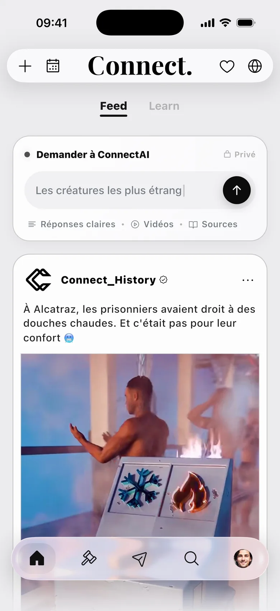
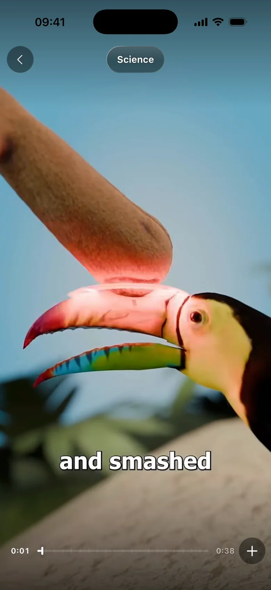
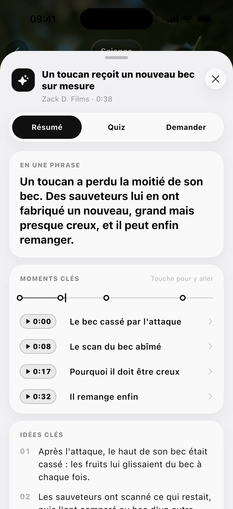
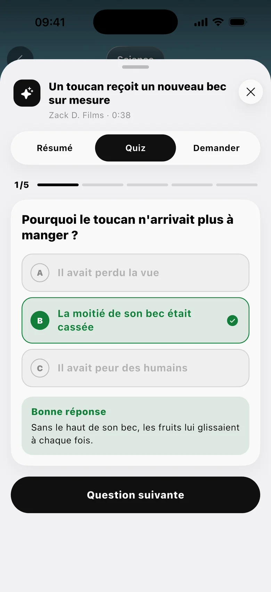
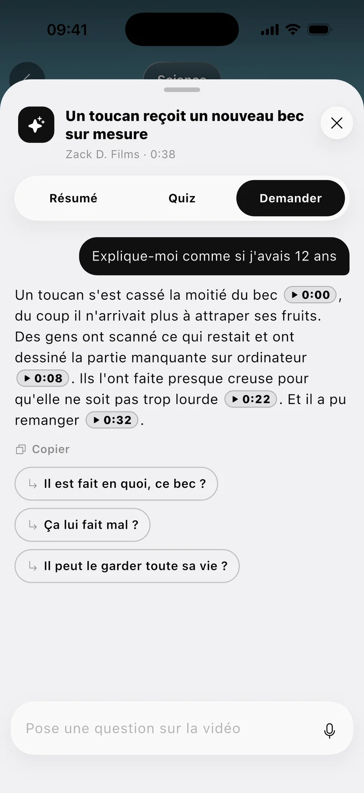
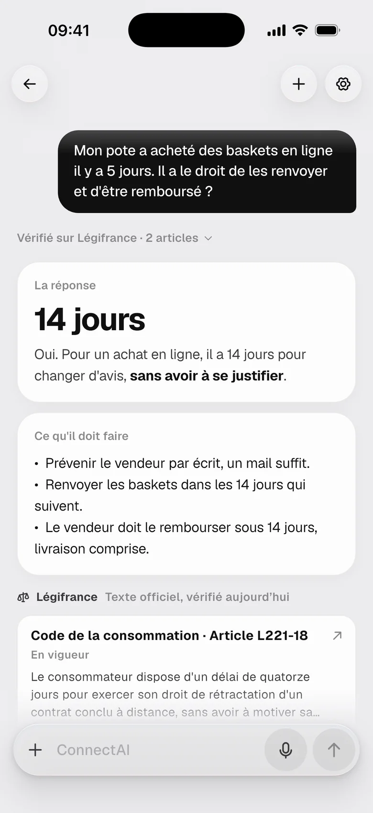
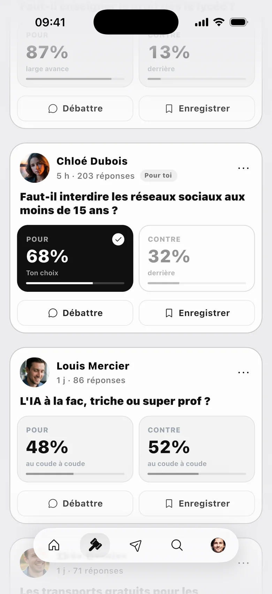
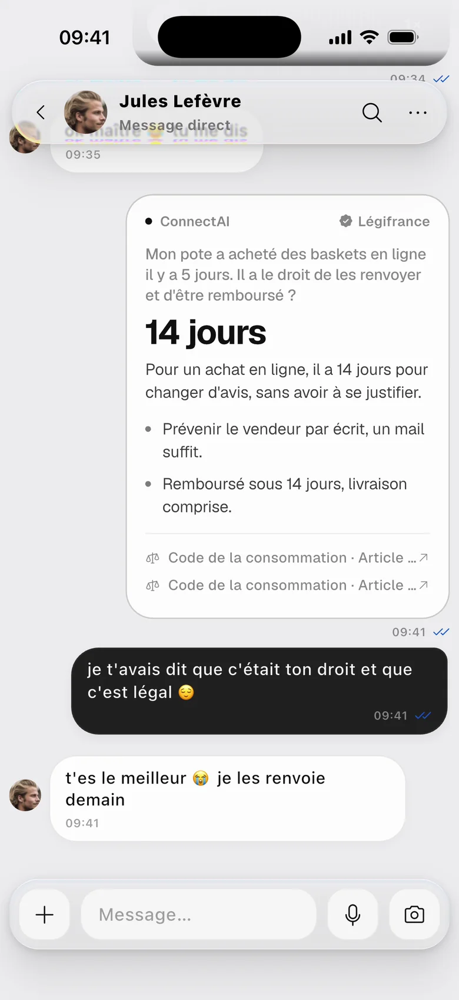
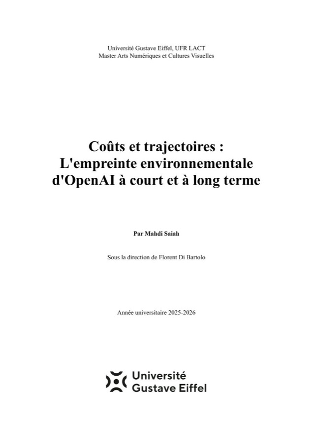

The problem
You scroll for an hour and keep nothing.
Social feeds are built to hold attention. Time spent matters more than what people actually get out of it.
Product Designer & Product Owner · Paris
I'm Mahdi Saiah. I designed and launched Connect on my own, a social app now live on the App Store, from the first user interviews to Apple's approval.
Looking for a 12-month apprenticeship, available now
designed and launched solo, live on the App Store
in a product team at BNP Paribas Real Estate
French native, English C1, Spanish B2
Case study · 2025 to today
A social app where every video teaches you something. Watch it, read the summary, take a quick quiz, then talk about it with your friends.
The problem
Social feeds are built to hold attention. Time spent matters more than what people actually get out of it.
My role
I decided what to build, designed every screen, wrote the specs and tested every build before it went out.
The result
Connect passed App Store review and is live, shaped by feedback from friends and early users.
Most social apps are designed to keep you there. I wanted a different question behind every decision: is this worth the person's time?
Before drawing anything, I talked to people about how they use social apps and what they regret about it. That gave me three personas, a benchmark of the apps they already use, and the user flows I prototyped in Figma.
I tested those prototypes with friends and early users and reworked the product after each round of feedback.
An empty feed is where new users leave. So sign-up ends with picking your interests, and the first screen you land on is already personalised.

This is the heart of Connect. On any video you can open a summary with key moments you tap to jump to, a short quiz, or a chat to ask it anything.
Design detail: the sheet keeps the video visible behind it, so you never lose your place.




Ask Connect answers in plain words and shows its sources. For a legal question it quotes the official French law text, so the answer doesn't rest on the AI's word alone.

Each debate is one clear question with two sides. Your pick shows in ink with the result right beside it, and the real discussion happens in the replies.

Share a video or an answer into a chat in one tap. It arrives as a clean card your friend opens right there, and the conversation keeps going, typed or as a voice note.

Shipping
As product owner I kept the roadmap and the backlog, wrote the specs and decided what made each release. I built the app with generative AI tools under my direction, and tested every build on a real iPhone before it went out.
Experience
UX/UI Designer · 6-month internship
Apr to Sep 2025 · Paris
I joined the product team of WIRED, an immersive 3D tool for visualising real estate data, now available on the web.
3D Designer · internship
Jun to Aug 2024 · Paris
I rebuilt a human brain in 3D from MRI data, from the raw scans to a complete anatomical model.
More work

Thesis · 2025-26
My Master 1 thesis on OpenAI's environmental footprint, today and where it is heading.
Read itGame · Unity · C#
A game where you drive and fly while the CO₂ you emit adds up on screen in real time.
See the project
Blender · 3D
Thirteen images made in Blender: Parisian facades, interiors, light and atmosphere.
See the galleryAbout
I'm a product designer moving into product ownership, based in Paris. What I love is carrying a product end to end: understanding the people it's for, deciding what to build, and making sure what ships lives up to it.
I'm starting a Master 2 in UX Design & Product Owner at Digital Campus Paris, and I'm looking for a 12-month apprenticeship: 4 days at work, 1 day at school.
Contact
If your team needs someone who can go from user research all the way to a shipped product, I'd love to talk.